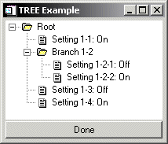

Tree widgets display information in a hierarchical structure or tree. Branches and sub-branches of the tree can be expanded and collapsed (either programmatically or by the user) to display or hide the information they contain. See WIDGET_TREE for a complete description of the function used to create tree widgets.
|
 |
This section discusses the following topics:
| • | Types of Tree Widgets |
| • | Example: A Simple Tree |
| • | Setting the Tree Selection State |
| • | Making a Tree Entry Visible |
| • | Replacing the Default Bitmaps |
| • | Dragging and Dropping Tree Nodes |
| • | Positioning Tree Nodes |